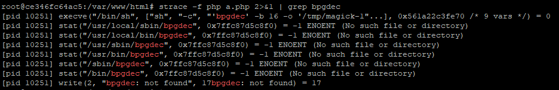

Ghost Pepper
题目链接：http://111.186.63.207:31337
一开始进去除了得到karaf:karaf，于是使用其登录进去，发现是404，于是我就开始怀疑是不是自己的账号密码不对了Orz…经过大佬提点，Ghost Pepper=鬼椒=Jolokia。
信息搜集
Jolokia 是一个通过 HTTP 的 JMX 连接器，提供了类 RESTful 的操作方式，可以通过 POST JSON 的方式访问和修改 JMX 属性、执行 JMX 操作、搜索 MBean、列出 MBean 的 Meta-data 等。具体参考：
https://www.anquanke.com/post/id/103016
https://www.anquanke.com/post/id/173262
查看官方文档，发现一个叫webconsole的东西，它提供了很多种功能，安装之后可以通过system/console进入终端控制台，尝试访问system/console，返回404，说明webconsole还没有安装
1 | Installation |
这里提供了一种webconsole的安装方法，通过karaf的feature安装
在官方文档中
1 | The MBeans object names have the same format: |
访问jolokia/list 得到可以访问的MBean，从MBean中查看feature提供的可使用的operation，这里着重关注karaf下的feature下的installFeature，利用installFeature即可安装
攻击
第一种方法
来自郁离歌大佬，通过安装webconsole进入控制台cat flag
构造一个json数据
1 | { |
将其post到/jolokia，就可以看到返回200，说明执行成功
这时访问/system/console就可以看到webconsole的界面而不是404了
点击Main下的Gogo进入终端，即可执行命令get flag
第二种方法
来自twings师傅，通过远程安装bundle反弹shell
https://aluvion.github.io/2019/03/26/0CTF-TCTF-Web%E9%A2%98%E8%A7%A3/#more
Wallbreaker Easy
题目链接：http://111.186.63.208:31340/
信息搜集
进去看到Imagick并且有一个backdoor，查看phpinfo，可以看到disable_functions：
1 | pcntl_alarm,pcntl_fork,pcntl_waitpid,pcntl_wait,pcntl_wifexited,pcntl_wifstopped,pcntl_wifsignaled,pcntl_wifcontinued,pcntl_wexitstatus,pcntl_wtermsig,pcntl_wstopsig,pcntl_signal,pcntl_signal_get_handler,pcntl_signal_dispatch,pcntl_get_last_error,pcntl_strerror,pcntl_sigprocmask,pcntl_sigwaitinfo,pcntl_sigtimedwait,pcntl_exec,pcntl_getpriority,pcntl_setpriority,pcntl_async_signals,system,exec,shell_exec,popen,proc_open,passthru,symlink,link,syslog,imap_open,ld,mail |
并且对open_basedir做了限制，但是putenv未被禁用
考察点：https://www.freebuf.com/articles/web/192052.html
在文章中有四种绕过disable_functions 的手法，其中一种就是利用环境变量 LD_PRELOAD 劫持系统函数，让外部程序加载恶意 *.so，达到执行系统命令的效果。
原理是利用漏洞控制 web 启动新进程 a，a 内部调用系统函数 b()，b() 位于系统共享对象 c.so 中，所以系统为该进程加载 c.so，那如果我们编写一个恶意的c_evil.so，在 c.so 前优先加载 c_evil.so，c_evil.so 内含与 b() 同名的恶意函数，由于 c_evil.so 优先级较高，所以，a 调用的是 c_evil.so 内 b() 而非系统的 c.so 内 b()，同时，c_evil.so 可控，达到执行恶意代码的目的。
本地测试
环境搭建
docker+ubuntu18.04环境，注意：由于要使用strace跟踪系统调用，这里需要加上–security-opt seccomp=unconfined，不然没有输出
1 | docker run -id --name php --security-opt seccomp=unconfined -p 32770:80 ubuntu |
然后修改/etc/nginx/sites-enabled/default开启php-fpm支持，直接将下方的注释修改一下就好，注意fastcgi_pass unix中的参数值它默认是php7.0-fpm.sock（对于我来说，如果没有这个问题请忽略），需要自行修改为php7.2-fpm.sock，不然访问不了php文件，会出现502
1 | location ~ \.php$ { |
然后修改/etc/php/7.2/fpm/php.ini，把disable_functions和open_basedir加上去：
1 | open_basedir = /var/www/html:/tmp/40f955f039eabe222958ff57ac1bfdbb |
最后在tmp下面新建自己的沙盒，然后启动nginx和php-fpm即可：
1 | service nginx start |
测试
写个a.php
1 | <?php |
跟踪系统调用
1 | strace -f php a.php 2>&1 | grep bpgdec |
可以看到输出

因此我们可以伪造一个这样的函数，通过覆盖PATH环境变量的方式，来让ImageMagick执行我们的恶意二进制文件
安装gcc
1 | apt-get install make gcc |
poc.c
1 |
|
gcc编译为bpgdec
1 | gcc poc.c -o bpgdec |
b.php
1 |
|
运行b.php，查看tmp目录下的结果，发现执行成功
攻击
脚本如下：
attack.py
1 | # -*- coding:utf8 -*- |
poc.c
1 |
|